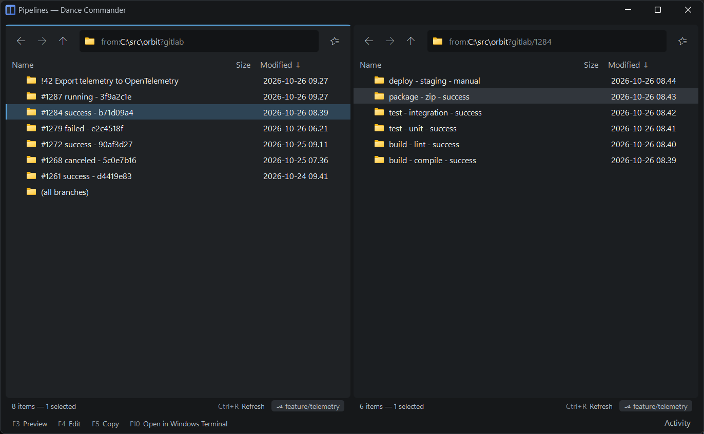

Listings and script locations
A place doesn't have to be a folder. A command can print a list of paths and that list becomes a listing; a script can answer “what is in here?” and become a whole browsable tree, such as your CI pipelines, with artifacts you can open and copy from like any zip.
Both go in the listings array of tools.json, beside tools.
Each appears in the menu of any local folder and in the palette under its title, and
the place it opens can be bookmarked. Save the file and the menus follow; "enabled":
false takes one out without deleting it.
Listings from a command
The command runs in the folder you are in. Whatever it prints is matched against
extract, a regular expression applied to the whole output; each match is a row, and the
path comes from the group named path (or the first group).
"listings": [
{
"id": "todo-paths",
"title": "Paths in TODO.md",
"exec": "rg",
"args": ["-o", "[A-Za-z]:[\\\\/][^\\s]+", "TODO.md"],
"extract": "^(?<path>.+)$"
}
]- Rows are real files. Open, copy, preview and “open containing folder” work as they would in the folder where each file lives.
- Other named groups can be columns. Declare them in
columnsto give them a header and an order:{ "group": "branch", "header": "Branch", "width": 160, "flexible": true }. One column may beflexibleand take the spare width. - A path that no longer exists is shown, marked not found, rather than silently dropped.
- A failing command shows its own error, not a generic one.
- Other fields:
inRepository(offer it only inside a repository) andshowModified: false(hide the Modified column when it means nothing). - Its
argsare passed as they are. Placeholders are filled in only for script locations.
The built-in Worktrees listing is one of these: git worktree list
--porcelain, with the branch as a column.
A listing's address is from:<folder>?<id>, such as
from:C:/src/app?todo-paths. The command itself is never in the address, so a bookmark
can only ever name something already in your own configuration.
Script locations
Set "script": true and the command becomes a small file system. Dance Commander
calls it with your args, then one of two verbs and the path of the level being looked
at:
list <crumbs> | Print the rows one level down |
read <crumbs> | Write one file's bytes to stdout |
The crumbs are the levels so far, joined with /, and empty at the top. By
default each row is one tab-separated line:
kind name size modified crumb
d Pipeline 4711 2026-10-01T09:12:00Z 4711
f job.log 20480 2026-10-01T09:20:41Z job.logOnly the name is required. kind d makes a folder; the
crumb (letters, digits and . _ ~ - %, but not . or
.. alone) defaults to the name and is what you get back when the user goes into that
row. A row whose crumb breaks the rule is shown with the reason, not dropped. Give an
extract with named groups (name, kind, crumb,
size, modified, and any column you declared) to read some other format.
"sort" says what it starts sorted by: name (the default),
modified or size, the last two newest or largest first.
Because a script location is an ordinary place, everything else comes for free: sorting,
filtering, preview, F5 to copy out, bookmarks, history, and session restore. A file
it returns that is an archive opens as one, so a CI job's artifacts.zip can be
browsed, and a single file copied out of it.
Script locations are read-only. To send something to a service, write a
tool; ${otherPaneDir} can tell it which item the other pane
is showing.
Tokens and secrets
${repoRoot}, ${branch}, ${remoteUrl} and ${dir}
are filled in in a script location's args, so one script can serve every repository and work out which
project it is from the remote.
List the secrets it needs in "secrets". Each arrives as an environment variable,
never on the command line: gitlab-token becomes DC_SECRET_GITLAB_TOKEN.
The first time, the pane asks for it inline; tick remember to keep it in Windows
Credential Manager.
Example: GitLab pipelines
The repository has a working example, scripts/gitlab-pipelines.ps1: the branch's
merge requests and pipelines, then each pipeline's jobs, then each job's artifacts.zip
and job.log.
"listings": [
{
"id": "gitlab",
"title": "Pipelines",
"exec": "pwsh",
"args": ["-NoProfile", "-File", "C:/tools/gitlab-pipelines.ps1",
"${remoteUrl}", "${branch}"],
"script": true,
"secrets": ["gitlab-token"],
"inRepository": true,
"sort": "modified"
}
]A personal access token with the read_api scope is enough. The application itself
knows nothing about GitLab: the script does, and you can write the same for any service.

Example: files git remembers
The second example, scripts/git-history.ps1, lists every file that used to be
below the folder you open it from and isn't any more, one row each, with the commit that took it
away. A tracked file deleted and not yet committed comes first. F3 shows the last
content it had; F5 copies it out, which restores it, with the line endings a checkout
would give it. It reads git and writes nothing. It has its own row format, so it gives an
extract and its columns:
"listings": [
{
"id": "git-gone",
"title": "Deleted files",
"exec": "pwsh",
"args": ["-NoProfile", "-File", "C:/tools/git-history.ps1", "${repoRoot}"],
"script": true,
"inRepository": true,
"extract": "^(?<name>[^\\t\\n]+)\\t(?<size>\\d*)\\t(?<crumb>[^\\t\\n]+)\\t(?<when>[^\\t\\n]*)\\t(?<folder>[^\\t\\n]*)\\t(?<change>[^\\t\\n]*)\\t(?<by>[^\\t\\n]*)\\t(?<commit>[^\\t\\r\\n]*)\\r?$",
"columns": [
{ "group": "folder", "header": "Was in", "width": 200 },
{ "group": "change", "header": "Change", "width": 140 },
{ "group": "when", "header": "When", "width": 130 },
{ "group": "by", "header": "By", "width": 110 },
{ "group": "commit", "header": "Commit", "width": 240, "flexible": true }
],
"showModified": false
}
]On a long history it takes a few seconds to list.